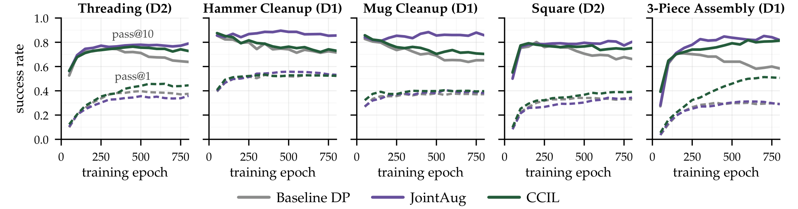
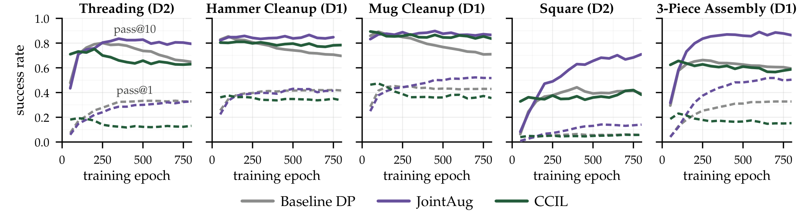
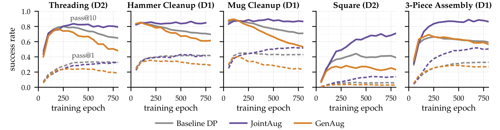
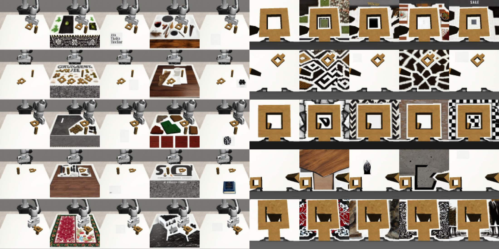
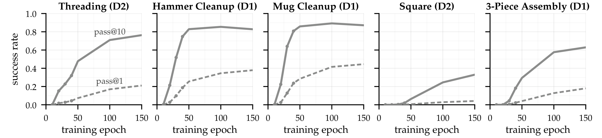
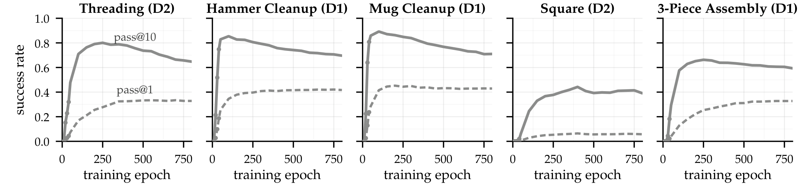
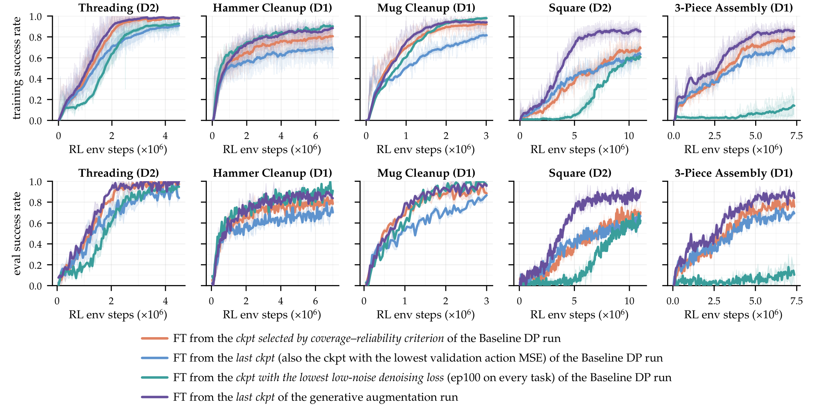
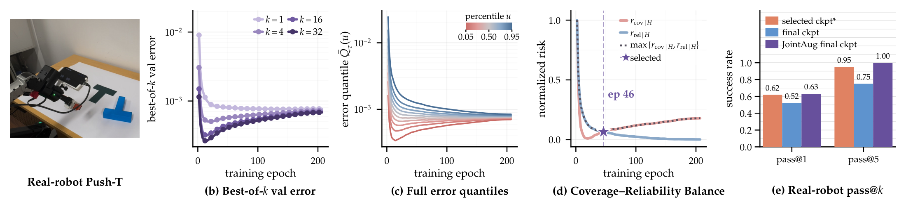
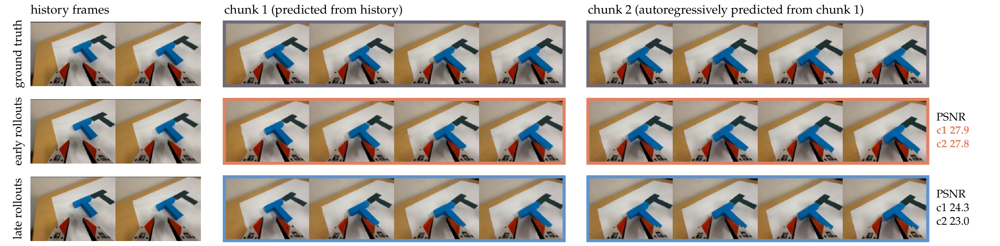

Rebuttal Response for Submission 28544
1.Additional augmentation baselines Reviewer ZP5i
1.1Additional justification for JointAug
JointAug builds on a simple generative augmentation idea that has been explored in different forms by prior work such as [1, 2]. Rather than selling it as a method, we want to emphasize how a joint generator can capture population-level structure shared across demonstrations. We use the action nearest-neighbor distance ratio to select generator checkpoints before overfitting. Sampling from these checkpoints gives the policy fresh, compatible observation–action pairs that reflect this shared structure and fill gaps between empirical training samples. The 2D illustration below explains this intuition.
1.2Additional baseline: CCIL
See our OpenReview response and Appendix F.5 of the updated manuscript for details. With state observations, CCIL largely improves on the baseline in both pass@$1$ and pass@$10$, but its pass@$10$ is generally below JointAug's.

CCIL needs an accurate local dynamics model and an analytic backward solve, so it doesn't directly scale to pixels; we apply it to the embeddings of the frozen epoch-150 baseline encoder. With image observations, CCIL generally lowers pass@$1$ relative to the baseline and underperforms JointAug in both metrics on every task. Two factors may explain the gap: even in embedding space, the learned dynamics model is not accurate enough for the backward solve to give reliable labels, and even with accurate state dynamics, CCIL only adds states one step from a demonstration, paired with the action that returns to it. This teaches the policy to correct small deviations, which helps pass@$1$, but adds no new ways of solving the task beyond the finite training set, so the decline in pass@$10$ with continued training is only slowed, not prevented.

1.3Additional baseline: GenAug
See our OpenReview response and Appendix F.6 of the updated manuscript for details. Following GenAug, we mask the robot and task objects and use Stable Diffusion inpainting to repaint the table or add a distractor object; each training frame is replaced by an edited variant with probability 0.5 and paired with the original action. GenAug falls below the baseline in both pass@$1$ and pass@$10$ on most tasks. Because it edits only the table and background, each robot–object configuration stays paired with the same demonstrated action. We hypothesize that the policy learns to ignore appearance and overfits to correlations between control-relevant cues (e.g., robot pose) and actions in the finite demonstration set. JointAug instead perturbs the robot–object configuration and the action together, so its samples expand the set of situations the policy sees.

Example GenAug training observations

We have updated the related work section of the manuscript to add discussion of augmentation methods, including GTA [2], ROSIE [4]/GenAug [3], and CCIL [5].
2.Comparing the selected checkpoint against the best pass@$1$ and pass@$k$ checkpoints Reviewer r6TG
See our OpenReview response and Appendix C.1 of the updated manuscript for details. Across the five MimicGen tasks, RL finetuning from our selected checkpoint is better than or not substantially worse than finetuning from the checkpoints with the best closed-loop pass@$1$ or pass@$10$. Those two choices require closed-loop evaluation of every candidate checkpoint, which is prohibitively expensive on a real robot; our criterion selects a checkpoint entirely offline from held-out data.
| Checkpoint epoch | Threading | Hammer Cleanup | Mug Cleanup | Square | 3-Piece Assembly |
|---|---|---|---|---|---|
| Selected (offline) | 350 | 200 | 200 | 300 | 350 |
| Last | 800 | 800 | 800 | 800 | 800 |
| Best pass@$1$ (closed-loop) | 700 | 750 | 200 | 400 | 700 |
| Best pass@$10$ (closed-loop) | 250 | 100 | 100 | 400 | 250 |

3.How does the gap between pass@$1$ and pass@$k$ emerge early in training? Reviewer r6TG
See our OpenReview response for details. The original MimicGen curves start at epoch 50 (evaluated every 50 epochs), so we additionally evaluate checkpoints at epochs 10, 20, 30 and 40. On all five tasks, pass@$1$ and pass@$10$ are both near zero at the earliest checkpoints, and pass@$10$ rises more sharply than pass@$1$ as training progresses.


4.RL train–eval gap and checkpoint selection by low-noise denoising loss Reviewer NdYB
See our OpenReview response and Appendix C.2 of the updated manuscript for details.
Train–eval gap. Every 50,000 environment steps, we evaluate the finetuned policy on the same 500 held-out initial configurations (bottom row). Training and held-out success show no noticeable gap.
Selection by validation losses. Mean validation action MSE plateaus late in training, with its minimum within 0.3% of the final checkpoint's value, so selecting by it effectively gives the final checkpoint (blue). Low-noise $\epsilon$-prediction loss does not measure the error of actions produced by the full sampling chain, and validation denoising or flow-matching loss has been found to correlate poorly with real-world success [6]; our criterion instead uses the error of sampled actions. Its cutoff is also not known in advance: the last two DDIM steps come from a diagnostic on Threading D2 alone (Fig. 12 of the updated manuscript) that needed large-scale closed-loop evaluation, whereas our criterion is fully offline with no hand-tuned thresholds. Applying that cutoff to every task, the held-out low-noise loss selects epoch 100 on all five tasks (teal). Finetuning from epoch 100 ends above our selected checkpoint on Hammer Cleanup and Mug Cleanup, slightly below on Threading, and well below on Square and 3-Piece Assembly, where epoch 100 is too early for either pass@$1$ or pass@$10$ to have peaked, so a cutoff that works on one task need not identify a good checkpoint on others.

5.Real robot results Reviewer NdYB
See our OpenReview response, Section 6 of main paper and Appendix H.8 of the updated manuscript for details. We study a 6-DoF Push-T task with wrist-camera observations and non-prehensile pushing, training a diffusion policy on 680 human demonstrations (60 more held out) for 200 epochs. Our offline criterion selects epoch 46. Over 20 fixed start configurations with five attempts each, the selected checkpoint reaches 62% pass@$1$ and 95% pass@$5$, versus 52% and 75% for the final checkpoint (epoch 200).
JointAug. Trained with the same procedure as in simulation, the final JointAug checkpoint (epoch 200) reaches 63% pass@$1$ and 100% pass@$5$: on the 20 tested configurations, JointAug raises coverage at the final checkpoint without early selection.

Downstream world-model learning. We train two action-conditioned world models on the demonstrations plus 200 rollouts from either the selected or the final checkpoint, and evaluate them on 100 held-out rollouts from intermediate checkpoints. The model trained on selected-checkpoint rollouts predicts better, suggesting that preserving policy coverage also benefits world-model learning.
| World model trained with rollouts from | PSNR ↑ | LPIPS ↓ |
|---|---|---|
| Chunk 1 | ||
| Selected checkpoint | 27.9 | 0.112 |
| Final checkpoint | 26.8 | 0.120 |
| Chunk 2 | ||
| Selected checkpoint | 25.2 | 0.136 |
| Final checkpoint | 24.1 | 0.145 |

References
- Wang, Renhao, et al. Prioritized generative replay. International Conference on Learning Representations, 2025.
- Lee, Jaewoo, et al. GTA: Generative trajectory augmentation with guidance for offline reinforcement learning. Advances in Neural Information Processing Systems 37 (2024): 56766–56801.
- Chen, Zoey, et al. GenAug: Retargeting behaviors to unseen situations via generative augmentation. arXiv preprint arXiv:2302.06671 (2023).
- Yu, Tianhe, et al. Scaling robot learning with semantically imagined experience. arXiv preprint arXiv:2302.11550 (2023).
- Ke, Liyiming, et al. CCIL: Continuity-based data augmentation for corrective imitation learning. International Conference on Learning Representations, 2024.
- Allshire, Arthur, et al. Scalable behavior cloning with open data, training, and evaluation. arXiv preprint arXiv:2606.27375 (2026).